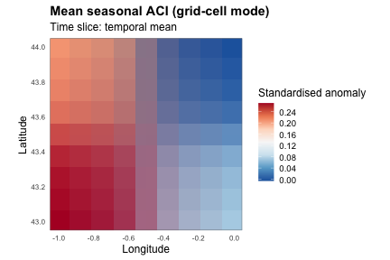

The Aggregation Matrix: Every Spatial x Temporal Combination
Source:vignettes/xaci-aggregation-matrix.Rmd
xaci-aggregation-matrix.Rmdcalculate_aci() exposes two independent
choices about how its output is aggregated:
-
Spatial aggregation, via
area/admin_level: a single national scalar per period (area = TRUE), the full ERA5 grid (area = FALSE,admin_level = NULL, seevignette("xaci-visualization")), or one value per administrative unit (admin_level = 1, 2, ..., seevignette("xaci-admin-levels")). -
Temporal aggregation, via
granularity:"month","season","semester", or"year"(see?aggregate_granularity).
Because these two axes are resolved independently — the underlying
grid-cell computation feeds all of them, and granularity is
applied only at the very end — every combination of the three spatial
modes and four granularities is valid. This vignette builds one small
synthetic dataset, computes its components once, and
then walks the full 3 x 4 matrix, showing what each combination looks
like.
Building one small synthetic dataset
Same pattern as vignette("xaci-full-pipeline"): a tiny 2
x 2 ERA5-like grid, plus two synthetic PSMSL tide-gauge stations.
build_synthetic_nc <- function(path, var, unit, lon, lat, time_vec, origin, vals) {
time_hours <- as.numeric(difftime(time_vec, origin, units = "hours"))
dim_lon <- ncdf4::ncdim_def("longitude", "degrees_east", lon)
dim_lat <- ncdf4::ncdim_def("latitude", "degrees_north", lat)
dim_time <- ncdf4::ncdim_def(
"time", paste0("hours since ", format(origin, "%Y-%m-%d %H:%M:%S")),
time_hours, unlim = TRUE
)
ncvar <- ncdf4::ncvar_def(var, unit, list(dim_lon, dim_lat, dim_time),
missval = NA, prec = "double")
nc <- ncdf4::nc_create(path, list(ncvar))
ncdf4::ncvar_put(nc, ncvar, vals)
ncdf4::nc_close(nc)
invisible(path)
}
build_synthetic_mask <- function(path, lon, lat) {
dim_lon <- ncdf4::ncdim_def("longitude", "degrees_east", lon)
dim_lat <- ncdf4::ncdim_def("latitude", "degrees_north", lat)
var_mask <- ncdf4::ncvar_def("country", "1", list(dim_lon, dim_lat),
missval = NA, prec = "double")
nc <- ncdf4::nc_create(path, list(var_mask))
ncdf4::ncvar_put(nc, var_mask, matrix(1, length(lon), length(lat)))
ncdf4::nc_close(nc)
invisible(path)
}
set.seed(11)
lon <- c(-1, 0)
lat <- c(43, 44)
origin <- as.POSIXct("1900-01-01 00:00:00", tz = "UTC")
time_vec <- seq(as.POSIXct("2011-01-01 00:00", tz = "UTC"),
as.POSIXct("2014-12-31 23:00", tz = "UTC"), by = "hour")
nlo <- length(lon); nla <- length(lat); nt <- length(time_vec)
trend <- seq_len(nt) / nt # mild warming/drying trend
seasonal_t <- 288 + 10 * sin(2 * pi * seq_len(nt) / (24 * 365)) + 0.6 * trend
t2m_vals <- array(NA_real_, c(nlo, nla, nt))
for (i in seq_len(nlo)) for (j in seq_len(nla))
t2m_vals[i, j, ] <- seasonal_t + (i + j) + rnorm(nt, sd = 1.5)
tp_vals <- array(0, c(nlo, nla, nt))
for (i in seq_len(nlo)) for (j in seq_len(nla)) {
rain_hours <- rbinom(nt, 1, 0.08 * (1 - 0.3 * trend))
tp_vals[i, j, ] <- rain_hours * rexp(nt, rate = 800)
}
u10_vals <- array(rnorm(nlo * nla * nt, mean = 3, sd = 4), c(nlo, nla, nt))
v10_vals <- array(rnorm(nlo * nla * nt, mean = 1, sd = 4), c(nlo, nla, nt))
t2m_file <- tempfile(fileext = ".nc")
tp_file <- tempfile(fileext = ".nc")
u10_file <- tempfile(fileext = ".nc")
v10_file <- tempfile(fileext = ".nc")
mask_file <- tempfile(fileext = ".nc")
build_synthetic_nc(t2m_file, "t2m", "K", lon, lat, time_vec, origin, t2m_vals)
build_synthetic_nc(tp_file, "tp", "m", lon, lat, time_vec, origin, tp_vals)
build_synthetic_nc(u10_file, "u10", "m s-1", lon, lat, time_vec, origin, u10_vals)
build_synthetic_nc(v10_file, "v10", "m s-1", lon, lat, time_vec, origin, v10_vals)
build_synthetic_mask(mask_file, lon, lat)
month_frac <- c("0417", "125", "2083", "2917", "375", "4583",
"5417", "625", "7083", "7917", "875", "9583")
build_synthetic_psmsl_station <- function(dir, station_id, years,
base_level, trend_mm_per_year) {
lines <- character(0)
for (y in years) {
for (m in seq_len(12)) {
level <- base_level + trend_mm_per_year * (y - years[1]) + rnorm(1, sd = 15)
lines <- c(lines, sprintf("%d.%s;%.1f;0;000", y, month_frac[m], level))
}
}
writeLines(lines, file.path(dir, paste0(station_id, ".txt")))
}
psmsl_dir <- tempfile("psmsl_")
dir.create(psmsl_dir)
build_synthetic_psmsl_station(psmsl_dir, 1, 2011:2014, base_level = 7020, trend_mm_per_year = 3)
build_synthetic_psmsl_station(psmsl_dir, 61, 2011:2014, base_level = 6980, trend_mm_per_year = 4)
# See vignette("xaci-components") for why reference_period needs >= 3 years.
reference_period <- c("2011-01-01", "2013-12-31") # 3 years
study_period <- c("2011-01-01", "2014-12-31") # 4 years
cache_dir <- tempfile("aci_cache_")
dir.create(cache_dir)Step 1 — compute every component once
The six components (t90, t10,
precipitation, drought, wind,
sealevel) are computed from the raw ERA5/PSMSL data
before any spatial or temporal aggregation is applied.
Caching them with save = TRUE lets every combination
explored below reuse the exact same computation — this is the same
save / computed_components pattern shown in
vignette("xaci-components"), just used here across the
whole matrix instead of a single re-run:
invisible(calculate_aci(
country_abbrev = "FRA",
study_period = study_period,
reference_period = reference_period,
temperature_data_path = t2m_file,
precipitation_data_path = tp_file,
wind_u10_data_path = u10_file,
wind_v10_data_path = v10_file,
mask_data_path = mask_file,
sealevel_dir = psmsl_dir,
granularity = "month", # irrelevant here: not cached
area = TRUE, # irrelevant here: not cached
admin_level = NULL,
save = TRUE,
save_dir = cache_dir,
computed_components = FALSE
))Note the two comments above: granularity and
area/admin_level are not part
of what gets cached at this step — only the raw, unstandardised
components are (see ?calculate_aci, “computed_components”
section). Every call below reuses this same cache via
computed_components = TRUE, and can freely vary spatial
mode and granularity without recomputing anything from the NetCDF/PSMSL
files.
Pre-seeding the administrative cache (no network)
Administrative aggregation normally needs
build_admin_mask() /
assign_sealevel_to_admin(), which download real GADM
polygons and a coastline layer over the network (see
vignette("xaci-admin-levels")). To demonstrate the
administrative spatial mode here without network access, we save
hand-built admin_mask / admin_assignment
objects directly at the cache path calculate_aci() expects
— the exact same trick vignette("xaci-admin-levels") uses
at the component level, just applied one level up so
calculate_aci() itself can be called directly:
admin_level <- 1
synthetic_admin_mask <- list(
units = c("A", "B"),
lon = lon,
lat = lat,
weights = list(
`1` = c(A = 1, B = 0), # cell (lon[1], lat[1])
`2` = c(A = 0, B = 1), # cell (lon[1], lat[2])
`3` = c(A = 1, B = 0), # cell (lon[2], lat[1])
`4` = c(A = 0, B = 1) # cell (lon[2], lat[2])
)
)
synthetic_admin_assignment <- list(
station_ids = list(A = 1, B = 61), # PSMSL IDs: Brest -> A, Marseille -> B
factors = c(A = 0.6, B = 0.3) # coastal fraction per region
)
admin_tag <- sprintf("FRA_L%d", admin_level)
saveRDS(synthetic_admin_mask,
file.path(cache_dir, paste0("admin_mask_", admin_tag, ".rds")))
saveRDS(synthetic_admin_assignment,
file.path(cache_dir, paste0("admin_assignment_", admin_tag, ".rds")))With both .rds files in place, any
calculate_aci(..., admin_level = 1, computed_components = TRUE)
call below will pick them up directly instead of trying to build them —
no network call, no geodata/rnaturalearth
lookup.
The three spatial modes, one temporal granularity
Fixing granularity = "month", here is what each spatial
mode returns:
national_monthly <- calculate_aci(
country_abbrev = "FRA", study_period = study_period, reference_period = reference_period,
temperature_data_path = t2m_file,
precipitation_data_path = tp_file,
wind_u10_data_path = u10_file,
wind_v10_data_path = v10_file,
mask_data_path = mask_file,
granularity = "month", area = TRUE, admin_level = NULL,
computed_components = TRUE, load_dir = cache_dir
)
class(national_monthly); dim(national_monthly)
#> [1] "data.frame"
#> [1] 48 7
head(national_monthly, 2)
#> drought wind precipitation t10 t90 sealevel ACI
#> 2011-01 -0.9954027 0 0.9008374 0.9203157 -0.8431515 0.6340295 -0.3329282
#> 2011-02 -1.0492241 0 0.9040871 0.9443331 -1.0830902 -1.1163822 -0.4607378
grid_monthly <- calculate_aci(
country_abbrev = "FRA", study_period = study_period, reference_period = reference_period,
temperature_data_path = t2m_file,
precipitation_data_path = tp_file,
wind_u10_data_path = u10_file,
wind_v10_data_path = v10_file,
mask_data_path = mask_file,
granularity = "month", area = FALSE, admin_level = NULL, max_dist_km = 800,
computed_components = TRUE, load_dir = cache_dir
)
class(grid_monthly); dim(grid_monthly$ACI) # [lon x lat x time]
#> [1] "list"
#> [1] 2 2 48
admin_monthly <- calculate_aci(
country_abbrev = "FRA", study_period = study_period, reference_period = reference_period,
temperature_data_path = t2m_file,
precipitation_data_path = tp_file,
wind_u10_data_path = u10_file,
wind_v10_data_path = v10_file,
mask_data_path = mask_file,
granularity = "month", admin_level = admin_level,
computed_components = TRUE, load_dir = cache_dir, save_dir = cache_dir
)
class(admin_monthly); dim(admin_monthly)
#> [1] "data.frame"
#> [1] 48 14
head(admin_monthly[, c("ACI_A", "ACI_B")], 2)
#> ACI_A ACI_B
#> 2011-01 0.4551911 -0.7979944
#> 2011-02 -0.3902822 -0.4622599Same underlying components, three genuinely different shapes: a
data.frame with one row per month nationally, a
[lon x lat x time] array list on the raw grid, and a
data.frame with one
<component>_<unit> column pair per
administrative unit.
The four granularities, one spatial mode
Fixing the national scalar mode (area = TRUE), here is
the same computation reported at each temporal granularity:
granularities <- c("month", "season", "semester", "year")
national_by_granularity <- lapply(granularities, function(g) {
calculate_aci(
country_abbrev = "FRA", study_period = study_period, reference_period = reference_period,
temperature_data_path = t2m_file,
precipitation_data_path = tp_file,
wind_u10_data_path = u10_file,
wind_v10_data_path = v10_file,
mask_data_path = mask_file,
granularity = g, area = TRUE, admin_level = NULL,
computed_components = TRUE, load_dir = cache_dir
)
})
names(national_by_granularity) <- granularities
sapply(national_by_granularity, nrow) # number of periods per granularity
#> month season semester year
#> 48 17 8 4
national_by_granularity$semester
#> drought wind precipitation t10 t90 sealevel ACI
#> 2011-S1 -1.0726834 0.0000000 0.71191686 0.97759636 -1.0646249 -0.2435785 -0.4714814
#> 2011-S2 -0.2508652 0.0000000 0.12721814 0.98284998 -1.0032526 -0.1374611 -0.4110081
#> 2012-S1 0.6393322 0.0000000 -0.01142285 -0.10235882 0.2376682 0.2216346 0.1946660
#> 2012-S2 -0.8133445 0.0000000 -0.24741900 -0.01973684 0.1508050 0.3067992 -0.1593965
#> 2013-S1 0.4333512 0.0000000 -0.70049401 -0.87523753 0.8269567 0.0219439 0.2768154
#> 2013-S2 1.0642097 0.0000000 0.12020086 -0.96311313 0.8524477 -0.1693381 0.5704046
#> 2014-S1 2.8006632 0.2327829 -1.00193126 -1.81931870 1.8426589 0.4725578 1.1130777
#> 2014-S2 1.8220896 0.1969534 0.10514547 -2.23259299 2.5165369 1.3834795 1.3750027The full matrix
Putting both axes together: 3 spatial modes x 4 granularities = 12 calls, all reusing the same cache from Step 1:
spatial_modes <- list(
national = list(area = TRUE, admin_level = NULL),
grid = list(area = FALSE, admin_level = NULL),
admin = list(area = TRUE, admin_level = admin_level) # area ignored when admin_level is set
)
matrix_results <- list()
for (mode_name in names(spatial_modes)) {
mode <- spatial_modes[[mode_name]]
for (g in granularities) {
key <- paste(mode_name, g, sep = "_")
matrix_results[[key]] <- calculate_aci(
country_abbrev = "FRA", study_period = study_period, reference_period = reference_period,
temperature_data_path = t2m_file,
precipitation_data_path = tp_file,
wind_u10_data_path = u10_file,
wind_v10_data_path = v10_file,
mask_data_path = mask_file,
granularity = g, area = mode$area, admin_level = mode$admin_level,
max_dist_km = 800,
computed_components = TRUE, load_dir = cache_dir, save_dir = cache_dir
)
}
}
summarise_result <- function(res) {
if (is.data.frame(res)) {
data.frame(class = "data.frame", n_periods = nrow(res), n_columns = ncol(res))
} else {
data.frame(class = "grid list",
n_periods = length(res$time),
n_columns = paste(dim(res$ACI)[1:2], collapse = " x "))
}
}
overview <- do.call(rbind, lapply(names(matrix_results), function(key) {
parts <- strsplit(key, "_")[[1]]
cbind(spatial = parts[1], granularity = parts[2], summarise_result(matrix_results[[key]]))
}))
rownames(overview) <- NULL
overview
#> spatial granularity class n_periods n_columns
#> 1 national month data.frame 48 7
#> 2 national season data.frame 17 7
#> 3 national semester data.frame 8 7
#> 4 national year data.frame 4 7
#> 5 grid month grid list 48 2 x 2
#> 6 grid season grid list 17 2 x 2
#> 7 grid semester grid list 8 2 x 2
#> 8 grid year grid list 4 2 x 2
#> 9 admin month data.frame 48 14
#> 10 admin season data.frame 17 14
#> 11 admin semester data.frame 8 14
#> 12 admin year data.frame 4 14Twelve calls, twelve distinct shapes, all derived from the same six cached components — only the last, cheap aggregation step differs between them.
Mapping one of the grid-cell combinations
As a concrete illustration, plot_aci_map() (see
vignette("xaci-visualization")) works directly on any
grid-cell entry of the matrix above, whatever its granularity:
plot_aci_map(matrix_results$grid_season, variable = "ACI", time_index = "mean",
borders = FALSE, title = "Mean seasonal ACI (grid-cell mode)")
plot of chunk unnamed-chunk-10
Wrap-up
- Spatial and temporal aggregation are resolved independently in
calculate_aci(): pick any of the 3 spatial modes and any of the 4 granularities, in any combination. - The expensive part — computing the six raw components from
ERA5/PSMSL data — only has to happen once, via
save = TRUE; every combination shown here reused it throughcomputed_components = TRUE. - For real (non-synthetic) administrative aggregation, see
vignette("xaci-admin-levels"); for mapping and plotting any of these outputs, seevignette("xaci-visualization"); for the six components individually, seevignette("xaci-components").